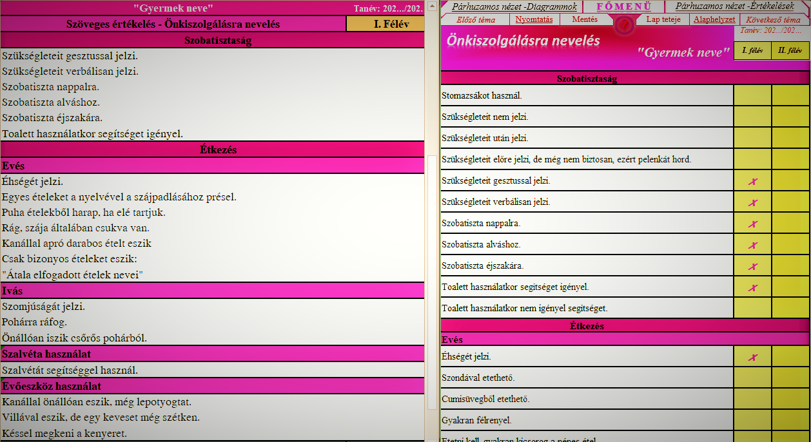
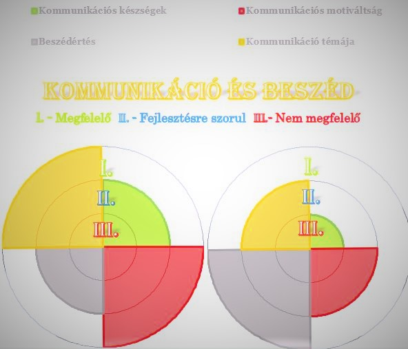

Az Értékek program egy intelligens, beépített automatizációval rendelkező kérdőív és értékelő rendszer. Válassza ki a vizsgált személyre pontosan vagy leginkább illő választ kérdés listáinkból, melyek automatikusan rendszerezve, formázva és nyomtatható formában lesznek elérhetőek az Ön számára.


Válasszon a legtöbb intézményben előforduló hét nagy témakörből és azoknak témaköreiből. Az egyes témakörök eredményei és kimutatásai megtekinthetők önállóan, vagy összegyűjtve. A témakörök kérdéseit javasolt sorrendben kitölteni, de amennyiben egy-egy témakört nem tud a vizsgált személyre kitölteni, csak ugorjon a következőre.
Az Értékek elsősorban fejlesztő - nevelő tevékenységet végző intézményeknek készült abból a célból, hogy a fejlesztő munkát végző pedagógusok és terapeuták gyorsabban készüljenek el adminisztratív dokumentációjukkal és képet kapjanak a vizsgált személyek állapotáról. A kötelező jellemzések létrehozásán túl, kiváltképp hasznos ha elektronikus úton átküldve, vagy pár oldalban kinyomtatva egy-egy érintett személy teljes képet kaphat egy fejlesztés alatt álló személyről, mindezt egységes formában. Fejlesztési célokat is könnyebb megfogalmazni, ha tételesen fel vannak sorolva a fejlesztendő személy jelenlegi képességei és az új kollegáknak is hasznos ha foglalkozás előtt látják a főbb tulajdonságokat.
A program használata egyszerű. Ha offline (letölthető) változatot használ csak ki egy adott vizsgálati időszakot (jellemzően félév vagy negyedév) és kattintson kétszer az eldöntendő kérdés melletti üres rubrikára, ezzel jelezvén, hogy az adott kérdés igaz. Online verzióban pedig csak húzza jobbra a csúszkát amennyiben igaz egy adott állítás. Válaszait és értékelésének állapotát nyomon tudja követni a „párhuzamos nézet” gombot megnyomva. Így láthatja értékelésének, vizsgálatának jelenlegi állapotát.
A megfelelő válaszok nem csak írásos formában jelennek meg. Minden vizsgált személyre jellemző válasz adott értéket képvisel, mely egy kördiagramm alapú képességhálót rajzol ki önnek. Ezzel nyomon tudja követni, hogy a kiválasztott időszakokban a témakörökben elért eredmények javultak, stagnáltak vagy romlottak.
A képen látható gyermek első időszakban vizsgűét eredményei a narancs és piros színnel jelölt terülteken romlottak ,míg a szürkével jelzett terülteten javulás látható.A diagrammok (vagy képességhálók) minden témakörben elérhetőek al-témakörönkénti bontásában,illetve a hét fő területet is összehasonlíthatja a két külön vizsgált időszakban.
Az értékek digitális verzióinak kimeneti fájljai lehetnek PDF dokumentumok melyek a szöveges értékeléseket képesek megjeleníteni, illetve a diagramm elemeket lehet képekként is menteni. Az Értékek asztali verziójánál érdemes vizsgált személyenként elmentei a vizsgálólapokat, így nem csak ott tudják folytatni munkájukat ahol abbahagyták, de évekre visszamenőleg is meg tudják nézni válaszaikat, vizsgálati eredményeiket.
Ossza meg vizsgálati eredményeit egyszerűen!
Ezen fajta digitális fájlok egyáltalán nem foglalnak sok helyet, kompakt méretük pedig tökéletesen alkalmasak webes továbbításra, akár egy szimpla e-mailen keresztül vagy Messenger alkalmazással.
Bizonytalan megfelel e önnek az Értékek program? A „Verziók” menüpont alatt kattintson a „Demó verzió” lehetőségre. A letöltés gombra kattintva letöltheti a próbaverziót. A letöltött fájlt nyissa meg, telepítse a programot a „next” gombokra kattintva. A telepítés végeztével 24 órája van kipróbálni az Értékek asztali verzióját. Az idő letelte után a program zárolja magát. Ha ezután is szeretné igény bevenni szolgáltatásainkat keressen minket bizalommal!